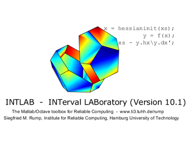

Interval arithmetic in INTLAB
Contents
Redefinition of the interval arithmetic
With Version 6 of INTLAB I redefined the interval arithmetic in INTLAB. Formerly, the empty set was represented by NaN. It turned out that a consistent definition of all interval operations avoiding NaN-results slows down EVERY interval operation in INTLAB. Therefore I choose to interpret a NaN-component as "no information".
Although infinity- or NaN-components are usually rare, taking care of them slows down simpe operations by up to a factor 3. I found this hardly acceptable.
Most users won't recognize any change. I recommend to visit the demo "dintval" before continuing with this demo.
Definition of interval arithmetic
If an interval component has value NaN, it does not mean that component empty but rather no information is available on that component. For example,
format compact short infsup X = [ infsup(3,inf) ; infsup(-1,2) ; inf] Y = 0./X
intval X = [ 3.0000, Inf] [ -1.0000, 2.0000] [ Inf, Inf] intval Y = [ 0.0000, 0.0000] [ NaN, NaN] [ 0.0000, 0.0000]
has one component "NaN" due to the division 0/0. Any operation with this component will result in a "NaN" component, such as
contains_0 = in(0,Y)
intersect( infsup(-1,4) , Y )
contains_0 = 3×1 logical array 1 0 1 intval ans = [ 0.0000, 0.0000] [ NaN, NaN] [ 0.0000, 0.0000]
Input out of range for real standard functions
If for real standard functions part of the input is out of range, the result of the corresponding component will be NaN:
intvalinit('RealStdFctsExcptnNaN')
X = [ infsup(-2,9) ; infsup(0,4) ]
Y = sqrt(X)
===> Result NaN for real interval input out of range intval X = [ -2.0000, 9.0000] [ 0.0000, 4.0000] intval Y = [ NaN, NaN] [ 0.0000, 2.0000]
How to use the NaN-mode?
The default NaN-mode can be used without any precautions. If during the computation of a result all operations are well-defined, the computed result is a true inclusion of the correct result.
If during the computation the input of some operation was out-of-range, the computed result will be NaN. More precisely, the corresponding components will be NaN, as in
intvalinit('RealStdFctsExcptnNaN')
X = intval(-1:1)
Y = log(X)
===> Result NaN for real interval input out of range intval X = [ -1.0000, -1.0000] [ 0.0000, 0.0000] [ 1.0000, 1.0000] intval Y = [ NaN, NaN] [ - Inf, - Inf] [ 0.0000, 0.0000]
The real standard functions can be switched automatically to their complex pendant as follows:
intvalinit('RealStdFctsExcptnWarn')
X = [ infsup(2,3) infsup(-1,4) ]
midrad(sqrt(X))
===> Complex interval stdfct used automatically for real interval input
out of range, but with warningintval X =
[ 2.0000, 3.0000] [ -1.0000, 4.0000]
Warning: SQRT: Real interval input out of range changed to be complex
Warning: Complex Sqrt: Input interval intersects with branch cut
intval =
< 1.5731 + 0.0000i, 0.1590> < 1.2247 + 0.0000i, 1.5812>
The warning may be suppressed using "intvalinit('RealStdFctsExcptnAuto')".
intvalinit('RealStdFctsExcptnAuto')
X = [ infsup(2,3) infsup(-1,4) ]
midrad(sqrt(X))
===> Complex interval stdfct used automatically for real interval input
out of range (without warning)intval X =
[ 2.0000, 3.0000] [ -1.0000, 4.0000]
Warning: Complex Sqrt: Input interval intersects with branch cut
intval =
< 1.5731 + 0.0000i, 0.1590> < 1.2247 + 0.0000i, 1.5812>
And finally the message when changing the mode may be suppressed using "intvalinit('RealStdFctsExcptnAuto',0)".
intvalinit('RealStdFctsExcptnAuto',0)
X = [ infsup(2,3) infsup(-1,4) ]
midrad(sqrt(X))
intval X = [ 2.0000, 3.0000] [ -1.0000, 4.0000] Warning: Complex Sqrt: Input interval intersects with branch cut intval = < 1.5731 + 0.0000i, 0.1590> < 1.2247 + 0.0000i, 1.5812>
The empty set
There is no explicit representation of the empty set. This is a necessary compromise. Since NaN is interpreted as Not-an-Interval, another representation of the empty set would have been necessary, slowing down again EVERY operation.
However, the only operation in the NaN-mode, the result of which may be the empty set is intersection. However, numerous case distinctions in many programs would have been necessary to distinguish between NaN and the empty set - whatever the representation of the latter may be. All operations would be slowed down by that. Maybe that is not worth it.
Consider
A = infsup( [1 2;-2 3;0 2] , [2 3;1 4;3 5] ) res = intersect(A(:,1),A(:,2))
intval A = [ 1.0000, 2.0000] [ 2.0000, 3.0000] [ -2.0000, 1.0000] [ 3.0000, 4.0000] [ 0.0000, 3.0000] [ 2.0000, 5.0000] intval res = [ 2.0000, 2.0000] [ NaN, NaN] [ 2.0000, 3.0000]
How to decide that the intersection of A(2,1) and A(2,2) is truely empty and not the consequence of some NaN-component? This is solved as follows:
[e,res] = emptyintersect(A(:,1),A(:,2))
e =
0
1
0
intval res =
[ 2.0000, 2.0000]
[ NaN, NaN]
[ 2.0000, 3.0000]
Now e(2)=1 indicates that indeed the intersection is empty; a zero component in e corresponds to non-empty intersection.
Enjoy INTLAB
INTLAB was designed and written by S.M. Rump, head of the Institute for Reliable Computing, Hamburg University of Technology. Suggestions are always welcome to rump (at) tuhh.de
intlablogo(35)